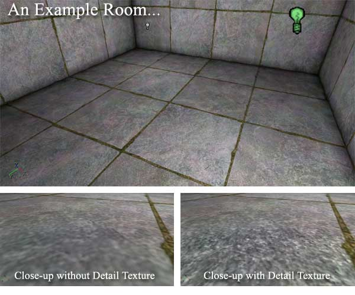
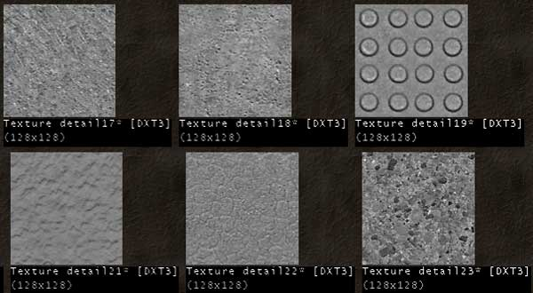
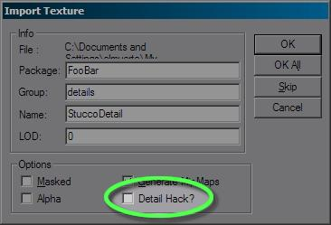
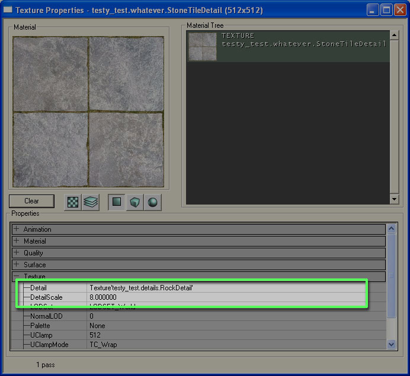

UDN
Search public documentation:
DetailTexture
Interested in the Unreal Engine?
Visit the Unreal Technology site.
Looking for jobs and company info?
Check out the Epic games site.
Questions about support via UDN?
Contact the UDN Staff
DetailTextures
Introduction
A Detail Texture is a modifier layer that will be laid on top of an existing texture. It will show up only when you get close to the surface, and helps textures appear more complex when viewed from up close. What follows is an explanation of how to use these Detail Textures.
What makes a good Detail Texture?
Detail Textures are grayscale images. Only the RGB channels are applied so no Alpha Channel is necessary. Here are a few examples taken from UT2004:
As you can see, very different kinds of texture can be applied, from rough stone, to cracked mud, to more industrial man-made patterns.How do I create a Detail Texture?
To create a Detail Texture import the texture normally into the engine. You will notice a checkbox labeled "Detail Hack" in the lower right of the import dialog box. Checking this will change the mipmaps for the texture, it will fade to gray as you get farther away.
You can also enable the Detail Hack once the texture is in the Texture Browser by right-clicking on the texture. Note that this process will change the mipmaps for the texture irreversibly.How do I apply a Detail Texture?
Open the properties of the texture to which you want to apply your new Detail Texture and choose it in the "Detail" field.
You can change the tiling resolution of your Detail Texture under "Detail Scale". The default Detail Scale is 8, meaning the detail texture is drawn 8 times vertically and 8 times horizontally for each time the parent texture is drawn once. Be sure that the Detail Scale is set appropriately for the parent texture; perhaps the parent texture is very small, in which case you may not want the detail texture to draw 8x8 times per instance of the parent.